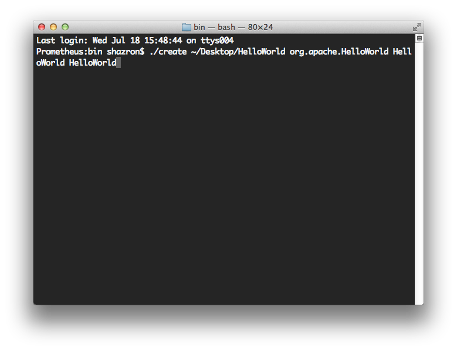
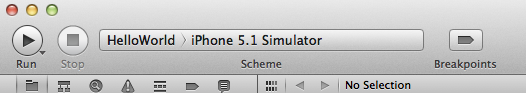
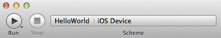

Getting Started with iOS
This guide describes how to set up your development environment for Apache Cordova and run a sample Apache Cordova application.
Requirements
- Xcode 4.5+
- Xcode Command Line Tools
- Intel-based computer with Mac OS X Lion or greater (10.7+)
- Necessary for installing on device:
- Apple iOS device (iPhone, iPad, iPod Touch)
- iOS developer certificate
Install the iOS SDK and Apache Cordova
- Install Xcode from the Mac App Store or Apple Developer Downloads
- Install the Xcode Command Line Tools (Xcode Preferences -> Downloads -> Components -> Command Line Tools -> Install).
- Download the latest release of Apache Cordova
- extract its contents
- Apache Cordova iOS is found under
lib/ios
Install CordovaLib
- Download the Cordova source
- Extract to source to their final permanent location on your hard drive (for example, to ~/Documents/CordovaLib-2.X.X)
- There is no step 3
Create a New Project
- Launch Terminal.app
- Drag the bin folder (located in the permanent folder location of Cordova, from the "Install CordovaLib" section above) to the Terminal.app icon in your Dock, it should launch a new Terminal window
-
Type in
./create <project_folder_path> <package_name> <project_name>then press "Enter"<project_folder_path> is the path to your new Cordova iOS project (it must be empty if it exists) <package_name> is the package name, following reverse-domain style convention <project_name> is the project name
Locate your new project folder that you just created
- Launch the .xcodeproj file in the folder
Note: Starting with Cordova 2.2, the project will have a copy of CordovaLib within it instead of having a dependency on the copy of CordovaLib from your Cordova installation.
If you would like your project to depend directly on your Cordova installation's version of CordovaLib, you can use:
./create --shared, or change the project reference after creation using:
./update_cordova_subproject path/to/you/project.
Deploy to Simulator
- Change the Target in the Scheme drop-down menu on the toolbar to "HelloWorld" (your project name)
-
Change the Active SDK in the Scheme drop-down menu on the toolbar to iOS [version] Simulator

Select the Run button in your project window's toolbar
Deploy to Device
- Open
HelloWorld-Info.plist, under the Resources group - Change BundleIdentifier to the identifier provided by Apple or your own bundle identifier
- If you have a developer license, you can run the Assistant to register your app
- Change the Target in the Scheme drop-down menu on the toolbar to "HelloWorld" (your project name)
-
Change the Active SDK in the Scheme drop-down menu on the toolbar to [Your Device Name]
- You will need to have your device connected via USB

Select the Run button in your project window's toolbar
Results
-
You should see the screen below, with a pulsating green "device is ready" message

Problems in Xcode
If you have compilation problems related to missing headers, the build products should build into the same build directory. You may need to set the preference "Xcode Preferences -> Locations -> Derived Data -> Advanced…" to "Unique". This is the default setting for Xcode on a fresh new install, if you upgraded from older versions of Xcode, you might have a legacy preference in there that you need to update.
Build Your App
You now have an Xcode project setup and you can build and run on the Simulator and device.
It is important to understand that you do not need to use Xcode to write your web application.
You can use your favourite text editor and simply rebuild your project using Xcode, or the command-line tools in your project folder (under the cordova sub-folder)
Xcode will automatically detect the files that are changed in www.
Problems in the Command Line Tools
If you see this error: "Error: No developer directory found at /Developer. Run /usr/bin/xcode-select to update the developer directory path." Run this to set your Developer folder:
sudo /usr/bin/xcode-select -switch /Applications/Xcode.app/Contents/Developer